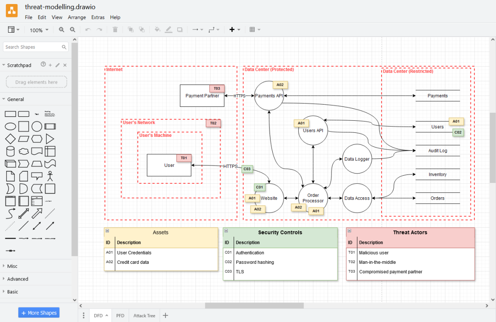

01 · Ce qui entre
Quels nouveaux éléments apparaissent ?
Nouveaux services, composants externes ou interfaces ajoutés au système.
Ce support de conférence est optimisé pour un affichage en mode paysage (horizontal).
Architecture Vivante
Alexis Scolan
Speaker
Architecte technique chez onepoint
Aligner l'architecture et le développement sur le terrain : des modèles versionnés, relus en Pull Request et maintenus sans redessiner.
Point de situation
Le vrai coût caché

Changer de paradigme
Traiter l'architecture comme du code : déclarative, multi-vues et intégrée au cycle logiciel.
01 · Vérité
Un modèle déclaratif centralisé et typé pour décrire le système sans ambiguïté.
02 · Perspectives
Projeter plusieurs angles de lecture adaptés à chaque besoin depuis le même modèle.
03 · Cycle de vie
L'architecture n'est plus un dessin figé : elle évolue au même rythme que le code.
Modélisation C4
Partie 1
AleFest Coffee · poser les premières frontières du système
Cas d'étude
V1 · la décision d'architecture
Le stand café d'AleFest souffre de 3 problèmes majeurs :
Créer un système de commande numérique au comptoir avec :
Impossible de charger l'aperçu ici.
Le replay est disponible localement dans presentation/public/assets/replay_ADR.html.
V1 · le diagramme
model {
festivalier = Actor_Person 'Festivalier' { ... }
barista = Actor_Staff 'Barista' { ... }
alefestCoffee = System_New 'AleFest Café' {
// Déclaration du système et de ses métadonnées
}
festivalier -[uses]-> alefestCoffee 'Passe sa commande au comptoir'
barista -[uses]-> alefestCoffee 'Prépare et suit les commandes'
}views {
view c1_context of alefestCoffee {
title 'Coffee V1 - Contexte'
// La vue projette et filtre les éléments du modèle
include
alefestCoffee,
festivalier,
barista
}
}Socle commun · spécifications
LikeC4 ne vous impose pas un vocabulaire rigide : vous définissez la grammaire des systèmes de votre entreprise une fois pour toutes.
01 · Acteurs
Qualifier qui interagit avec le système.
Actor_Person : utilisateur final, festivalier, clientActor_Staff : barista, équipe d'exploitation interne02 · Typologie d'éléments
La nature et granularité de chaque brique du modèle.
System_New / System_External : frontières de domainesContainer_Spa / Container_Api : applications & servicesComponent / Library : briques internes, modules, SDKsContainer_Database / Queue : stockage & bus03 · Sémantique des relations
Zéro flèche anonyme, protocoles et modes d'échange explicites.
-[calls]-> + technology 'HTTPS' : appel synchrone bloquant-[async]-> + technology 'AMQP' : événements découplés-[writes]-> + technology 'SQL' : persistance transactionnelle-[uses]-> : interaction humaine / expérience utilisateurZoom conteneurs (C2)
Quels conteneurs permettent de composer l'expérience AleFest Coffee ?
01 · Frontends
Les interfaces utilisateurs pour interagir au stand.
02 · Services
Le cœur de traitement découplé pour encaisser les pics de charge.
V1 · le diagramme
model {
extend alefestCoffee {
// 1. Conteneurs internes du stand
counterApp = Container_Spa 'Application Comptoir'
baristaScreen = Container_Spa 'Écran Barista'
orderService = Container_Api 'Service Commandes'
preparationService = Container_Api 'Service Préparation'
eventBus = Container_Queue 'RabbitMQ'
database = Container_Database 'PostgreSQL'
// 2. Flux synchrones, asynchrones & données
counterApp -[calls]-> orderService 'POST /orders'
baristaScreen -[calls]-> preparationService 'WebSocket'
orderService -[async]-> eventBus 'Publie order.placed'
eventBus -[async]-> preparationService 'Livre order.placed'
orderService -[writes]-> database 'Commande'
preparationService -[writes]-> database 'Statut'
}
}views {
view c2_containers of alefestCoffee {
title 'Coffee V1 - Containers'
// Sélecteur Wildcard : tous les conteneurs d'alefestCoffee
include alefestCoffee.*
// Sélecteurs de relations : flux entrants & sortants
include -> alefestCoffee
include alefestCoffee ->
// Sélecteur précis : flux direct vers le comptoir
include festivalier -> alefestCoffee.counterApp
}
}Partie 2
Faire évoluer l'architecture et l'éprouver avec des scénarios
V1 · Le comptoir
V2 · Le café mobile
V2 · évolution du modèle
model {
// 1. Système partenaire & application festival
festivalSystem = System_External 'Système Festival' {
festivalApp = Container_MobileApp 'Application Festival' { ... }
festivalService = Container_Api 'Service Festival' { ... }
festivalApp -[calls]-> festivalService 'API mobile festival' { technology 'HTTPS' }
}
alefestCoffee = System_New 'AleFest Café' {
counterApp = Container_Spa 'Application Comptoir' { ... }
baristaScreen = Container_Spa 'Écran Barista' { ... }
orderService = Container_Api 'Service de Commandes' { ... }
preparationService = Container_Api 'Service Préparation' { ... }
// 2. Service de notifications push branché sur RabbitMQ
notificationService = Container_Api 'Service Notification' { ... }
eventBus = Container_Queue 'RabbitMQ' { ... }
eventBus -[async]-> notificationService 'Livre order.preparing / order.ready' {
technology 'AMQP'
}
notificationService -[uses]-> festivalSystem.festivalApp 'Envoie push notification' {
technology 'Firebase Cloud Messaging'
}
}
// 3. Nouveaux flux festivalier & intégration commandes
festivalier -[uses]-> festivalSystem.festivalApp 'Commande mobile et suivi'
festivalier -[uses]-> alefestCoffee.counterApp 'Commande au comptoir (fallback)'
barista -[uses]-> alefestCoffee.baristaScreen 'Prépare et remet la boisson'
festivalSystem.festivalService -[uses]-> alefestCoffee.orderService 'Intégration des commandes partenaire' { technology 'HTTPS' }
}views {
view c2_containers of alefestCoffee {
title 'Coffee V2 - Containers'
// Le sélecteur intègre le partenaire et tous ses conteneurs
include
festivalier, barista,
festivalSystem, festivalSystem.*,
alefestCoffee.*
// Connexions automatiques vers l'extérieur
include -> alefestCoffee
include alefestCoffee ->
// Mise en valeur visuelle du bus de notification
style alefestCoffee.eventBus {
color amber
}
}
}dynamic view order_mobile_flow {
// 1. Commande mobile
festivalier -> festivalSystem.festivalApp 'Commande un flat white'
festivalSystem.festivalApp -> festivalSystem.festivalService 'POST /orders'
festivalSystem.festivalService -> alefestCoffee.orderService 'POST /orders'
alefestCoffee.orderService -> alefestCoffee.database 'INSERT order'
alefestCoffee.orderService -> alefestCoffee.eventBus 'order.placed'
festivalSystem.festivalService -> festivalSystem.festivalApp 'Confirme la commande'
festivalSystem.festivalApp -> festivalier 'Commande confirmée'
// 2. Préparation barista
alefestCoffee.eventBus -> alefestCoffee.preparationService 'order.placed'
alefestCoffee.preparationService -> alefestCoffee.baristaScreen 'WebSocket push file'
alefestCoffee.baristaScreen -> barista 'Affiche commande'
barista -> alefestCoffee.preparationService 'PATCH preparing'
alefestCoffee.preparationService -> alefestCoffee.eventBus 'order.preparing'
// 3. Notification & retrait
barista -> alefestCoffee.preparationService 'PATCH ready'
alefestCoffee.preparationService -> alefestCoffee.eventBus 'order.ready'
alefestCoffee.eventBus -> alefestCoffee.notificationService 'order.ready'
alefestCoffee.notificationService -> festivalSystem.festivalApp 'Push : votre café est prêt'
festivalSystem.festivalApp -> festivalier 'Notification reçue'
festivalier -> barista 'Récupère sa boisson'
}Côté festivalier
Bénéfice As-Code
Alignement d'équipe
Vision Produit · PO & Métier
Ingénierie · Développeurs & Archi
Partie 3
Le modèle évolue, la revue devient visuelle
Collaborer
projects/
├─ alefest-coffee-stand/
│ ├─ likec4.config.ts
│ ├─ system-model.c4 actif
│ └─ system-views.c4
└─ shared/ socle partagé
├─ images/
├─ SPEC_CHEATSHEET.md
├─ spec-code.c4
├─ spec-components.c4
├─ spec-containers.c4 ouvert
├─ spec-context.c4
├─ spec-deployment.c4
└─ spec-global.c4model {
alefestCoffee = System_New 'AleFest Café' {
counterApp = Container_Spa 'Application Comptoir'
baristaScreen = Container_Spa 'Écran Barista'
orderService = Container_Api 'Service de Commandes'
preparationService = Container_Api 'Service Préparation'
notificationService = Container_Api 'Service Notification'
eventBus = Container_Queue 'RabbitMQ'
database = Container_Database 'PostgreSQL'
}
}specification {
tag Container
tag MobileApp
tag Database
element Container_MobileApp {
#Container #MobileApp
notation "Mobile application"
style { shape mobile; icon @/custom/smartphone.svg }
}
element Container_Database {
#Container #Database
style { color storage; shape storage; icon @/lucide-static/database.svg }
}
}Ce qu'on veut voir en review
01 · Ce qui entre
Nouveaux services, composants externes ou interfaces ajoutés au système.
02 · Ce qui bouge
Nouvelles relations, flux asynchrones ou appels d'API modifiés.
03 · Ce qui devient sensible
Boucle de dépendance, couplage fort ou goulot d'étranglement potentiel.
Revue d'architecture
En Pull Request, le diff visuel permet de vérifier l'impact sur le système avant de fusionner.
gitGraph
commit id: "v1"
branch alefest_coffee_v2
checkout alefest_coffee_v2
commit id: "v2" tag: "Pull request"
checkout main
commit id: "fix #1"
commit id: "fix #2"
feat/alefest_coffee_v2 → main
Partie 4
ADR, modèle, validation, rendu et publication à chaque push
Industrialisation & Gouvernance
Faire de l'architecture un citoyen de premier rang : co-évolution du code et du modèle dans le même cycle de vie logiciel (SDLC).
flowchart LR
subgraph DEV["1. Évolution (branche Git)"]
direction TB
Archi["📐 Architecture as Code
model.c4 + ADR.md"]
Code["💻 Code applicatif
src/** + tests"]
end
subgraph PR["2. Revue conjointe"]
PRBox["🔀 PR Unifiée
Diff code + Visual Diff"]
end
subgraph CI["3. Intégration Continue"]
direction TB
ValArchi["✅ CI Architecture
LikeC4 CLI & intégrité"]
TestCode["🧪 CI Applicative
Lint, tests & build"]
end
subgraph CD["4. Livraison Continue"]
direction TB
DeployDoc["🗺️ CD Documentation
Portail vivant compilé"]
DeployApp["🚀 CD Logicielle
Services & conteneurs prod"]
end
SYNC("🎯 Zéro dérive documentaire
Miroir de la production")
Archi --> PRBox
Code --> PRBox
PRBox --> ValArchi
PRBox --> TestCode
ValArchi --> DeployDoc
TestCode --> DeployApp
DeployDoc --> SYNC
DeployApp --> SYNC
classDef gold stroke-width:2.5px;
classDef blue stroke-width:2.5px;
classDef green stroke-width:2.5px;
classDef purple stroke-width:2.5px;
class Archi,ValArchi,DeployDoc blue;
class Code,TestCode,DeployApp gold;
class PRBox purple;
class SYNC green;
✓ Preuve par l'exemple : tous les diagrammes interactifs projetés dans ce site de présentation sont directement issus d'un build LikeC4 produit en CI.
Partie 5
Que retenir et comment repartir avec du concret
flowchart TD
Fest["Festivalier"]
Bar["Barista"]
classDef gold fill:#e8f0fe,stroke:#1a73e8,stroke-width:2px
classDef blue fill:#e0f2fe,stroke:#0284c7,stroke-width:2px
classDef green fill:#dcfce7,stroke:#16a34a,stroke-width:2px
subgraph Frontends
direction LR
App["Festival App"]
Counter["Counter App"]
Screen["Barista Screen"]
end
subgraph Services
direction LR
Order["Order Service"]
MQ{{"RabbitMQ"}}
Prep["Preparation Service"]
Notif["Notification Service"]
end
DB[("PostgreSQL")]
class Fest,Bar,App,Counter,Screen gold
class Order,Prep,Notif blue
class MQ,DB green
Fest --> App
Fest --> Counter
Bar --> Screen
App -->|POST /orders| Order
Counter -->|POST /orders| Order
Screen <-->|WebSocket| Prep
Order -->|publish order.placed| MQ
MQ -->|consume order.placed| Prep
Prep -->|publish order.ready| MQ
MQ -->|consume order.ready| Notif
Notif -->|Push Firebase| App
Order --> DB
Prep --> DB
Notif --> DB
flowchart TD
Fest["Festivalier"]
Bar["Barista"]
classDef gold stroke-width:2px;
classDef blue stroke-width:2px;
classDef green stroke-width:2px;
subgraph Frontends
direction LR
App["Festival App"]
Counter["Counter App"]
Screen["Barista Screen"]
end
subgraph Services
direction LR
Order["Order Service"]
MQ{{"RabbitMQ"}}
Prep["Preparation Service"]
Notif["Notification Service"]
end
DB[("PostgreSQL")]
class Fest,Bar,App,Counter,Screen gold
class Order,Prep,Notif blue
class MQ,DB green
Fest --> App
Fest --> Counter
Bar --> Screen
App -->|POST /orders| Order
Counter -->|POST /orders| Order
Screen <-->|WebSocket| Prep
Order -->|publish order.placed| MQ
MQ -->|consume order.placed| Prep
Prep -->|publish order.ready| MQ
MQ -->|consume order.ready| Notif
Notif -->|Push Firebase| App
Order --> DB
Prep --> DB
Notif --> DB
model {
festivalier = Actor_Person 'Festivalier' { ... }
barista = Actor_Staff 'Barista' { ... }
festivalSystem = System_External 'Système Festival' {
festivalApp = Container_MobileApp 'Application Festival' {
technology 'React Native, Expo'
}
festivalService = Container_Api 'Service Festival' {
technology 'Node.js, Express'
}
festivalApp -[calls]-> festivalService 'API mobile festival' { ... }
}
alefestCoffee = System_New 'AleFest Café' {
counterApp = Container_Spa 'Application Comptoir' { ... }
baristaScreen = Container_Spa 'Écran Barista' { ... }
orderService = Container_Api 'Service de Commandes' { technology 'Node.js, Express, ...' }
preparationService = Container_Api 'Service Préparation' { technology 'Node.js, WebSocket, ...' }
notificationService = Container_Api 'Service Notification' { technology 'Node.js, Firebase, ...' }
eventBus = Container_Queue 'RabbitMQ' { technology 'RabbitMQ 3.12' }
database = Container_Database 'PostgreSQL' { technology 'PostgreSQL 16' }
orderService -[async]-> eventBus 'Publie order.placed' { ... }
eventBus -[async]-> preparationService 'Livre order.placed' { ... }
preparationService -[async]-> eventBus 'Publie order.ready' { ... }
orderService -[writes]-> database 'Créer et mettre à jour commande' { ... }
notificationService -[uses]-> festivalSystem.festivalApp 'Envoie push notification' { ... }
}
festivalier -[uses]-> festivalSystem 'Commande mobile et suivi'
barista -[uses]-> alefestCoffee 'Prépare et remet la boisson'
festivalSystem -[uses]-> alefestCoffee 'Intégration partenaire' { technology 'HTTPS' }
}Pourquoi LikeC4 ?
Partage & dynamisme
Généraliser la pratique
« Et sur un système existant avec 15 ans d'historique et 300 machines ? » Pas de grand soir : ingénierie inverse assistée par IA et démarche d'attrition progressive.
01 · Existant & IA
02 · Infrastructure
03 · Entreprise
Synthèse
Visio, Confluence · redessin manuel à chaque évolution
Schémas hors des PR · dette documentaire subie
Images mortes à 6 mois · imperméables à la CI/CD et à l'IA
Code source .c4 refactorable avec le code applicatif
Diff visuel partagé · relecture collective sécurisée
Build automatique · app web navigable et copilote IA
Kit de démarrage · Takeaway
Panorama comparatif complet sur DEV Community (Onepoint) : retours terrain et critères de choix pour convaincre vos équipes.
Dépôt GitHub interactif prêt à forker : cas AleFest Coffee (V1/V2), modèles LikeC4, scripts et templates partagés.
Documentation officielle et communauté : guide complet du DSL LikeC4, extension VS Code avec preview en direct et CI/CD.
« La meilleure documentation d'architecture est celle qui vit et évolue avec vos projets. »
Questions / Réponses
Ne dessinez plus vos architectures : codez-les
Alexis Scolan — Architecte technique